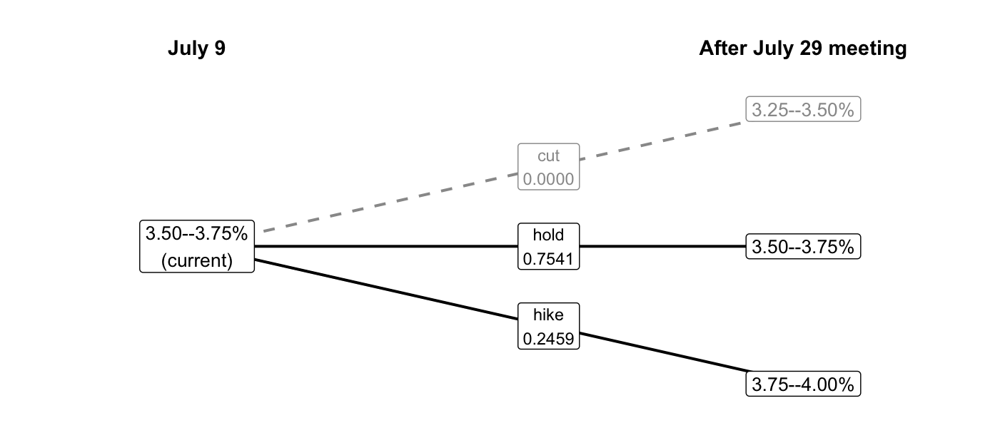
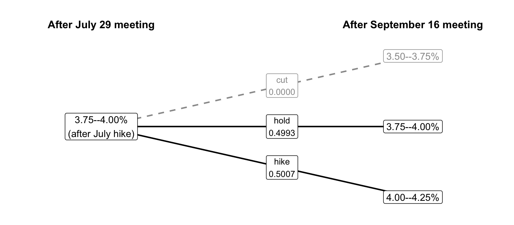
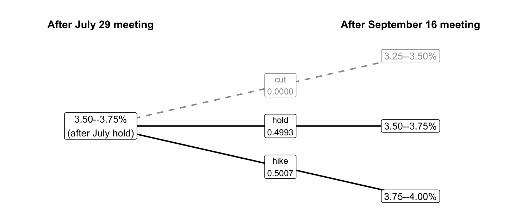
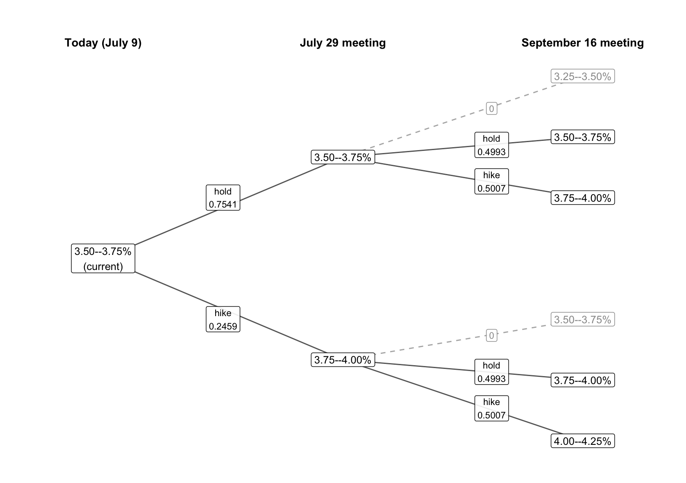
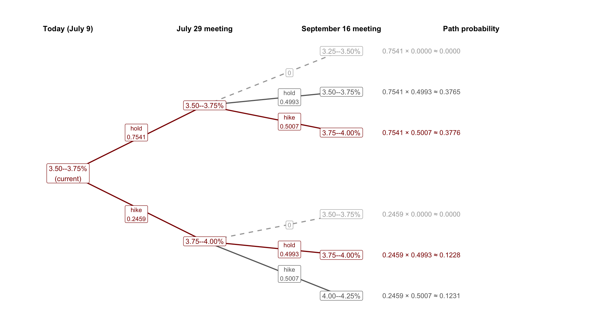
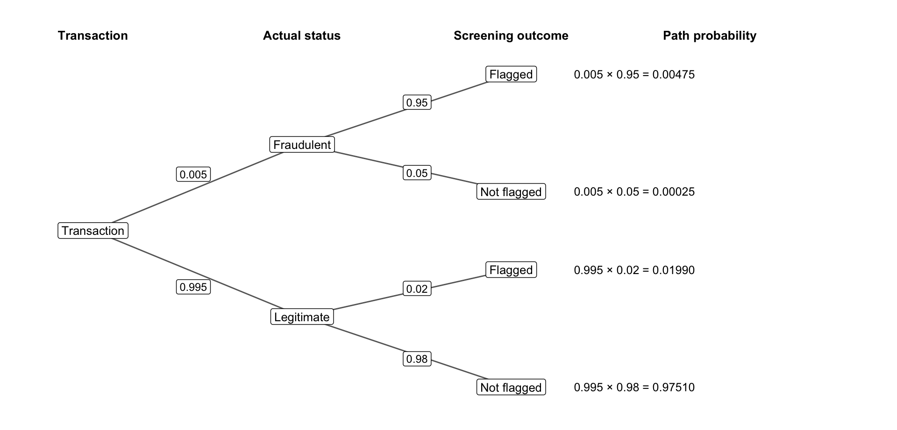
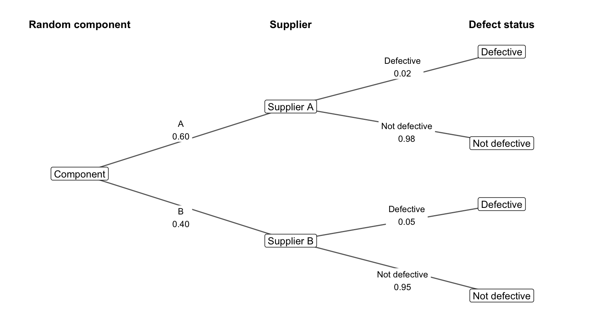

11 Probability Trees, Total Probability, and Bayes’ Rule
11.1 The Fed’s two meetings
CME FedWatch uses futures prices to estimate probabilities for future federal funds target ranges. In the July 9, 2026 snapshot we use here, its model allows a hold or a 25-basis-point hike at each of the next two meetings. A hike of 25 basis points raises the target range by 0.25 percentage points.
Technical detail 11.1: How FedWatch constructs the meeting probabilities
FedWatch uses monthly federal funds futures prices to infer the expected change in the effective federal funds rate at each scheduled meeting. It expresses that expected change in 25-basis-point increments, then splits probability between the two adjacent increments that bracket it. For example, an expected 15-basis-point increase becomes a 0.4 probability of a hold and a 0.6 probability of a 25-basis-point hike.
The method does not limit the Fed to a single 25-basis-point move. An expected 72.5-basis-point increase would instead become a 0.1 probability of a 50-basis-point hike and a 0.9 probability of a 75-basis-point hike. Expected decreases produce the corresponding pair of cuts. CME’s methodology gives the complete construction.
On July 9, the target range was 3.50–3.75%. Futures prices implied a probability of 0.2459 that the Fed would hike at its July 29 meeting and a probability of 0.7541 that it would hold. The FedWatch model assigns zero probability to a cut in this snapshot. We can arrange the nearby outcomes in a branching tree:
If the Fed were to hike rates at the July meeting, a hold in September would leave the target at 3.75–4.00%, while another hike would raise it to 4.00–4.25%. We reconstruct the conditional branch probabilities from CME’s published target-range probabilities under this model. The probability of a September hike given a July hike is 0.5007:

These are conditional probabilities because they answer an “if” question: If the Fed hikes in July, what is the chance of another hike in September? The action on a September branch is a move relative to the July target; the leaf at the end of that branch is the resulting September target range.
If instead the Fed holds the target steady in July, the possible September outcomes start from 3.50–3.75%. The same September move probabilities now lead to different target ranges:

A September hold after a July hike also lands at 3.75–4.00%, giving us a second path to that target range.
We can collect these possibilities into one tree representing the different paths the target range could take over the two meetings:

We omitted the July-cut branch from the full tree because a cut was outside the two moves supported by this snapshot; the dashed September paths remain for reference. The tree is another way to represent a joint probability distribution over the target ranges after the July and September meetings. The probabilities on the branches leaving any one node sum to 1. Its first branches show the marginal distribution for July. The next set of branches applies the September meeting’s move distribution after each July outcome. Together they let us reconstruct the joint distribution and the marginal distribution of the September target range.
11.2 Multiplying along a path
Consider the joint probability of two hikes, which corresponds to a 4.00–4.25% target range in September. The probability of a July hike is 0.2459, and given a July hike, the probability of another hike is 0.5007. We defined conditional probability as
\[ \Pr(A \mid B) = \frac{\Pr(A \text{ and } B)}{\Pr(B)}. \]
NoteThe product rule
For \(\Pr(B)>0\), multiplying both sides by \(\Pr(B)\) gives the product rule:
\[ \Pr(A \text{ and } B) = \Pr(B)\Pr(A \mid B). \]
A joint probability is the probability of the condition times the probability of the other event given that condition.
The first factor is the probability of reaching the July branch; the second is the probability of the September move given that July outcome. Their product is the probability of the full path. Therefore, the probability of two consecutive hikes is
\[ \begin{aligned} &\Pr(\text{July hike and September hike}) \\ &\qquad = \Pr(\text{July hike}) \Pr(\text{September hike} \mid \text{July hike}) \\ &\qquad = 0.2459 \times 0.5007 \approx 0.1231. \end{aligned} \]
Exercise 11.1: A subscription path
Suppose 30% of visitors to a website start a free trial. Among visitors who start a trial, 40% buy a subscription. What is the probability that a randomly selected visitor starts a trial and buys a subscription? Explain why 0.40 alone does not answer this question.
Solution
Multiplying along the path gives \(0.30(0.40)=0.12\). Thus, 12% of all visitors start a trial and buy a subscription. The 0.40 conditions on having started a trial; it describes only the visitors who reach that branch.
11.3 The law of total probability
Now suppose we are interested in the probability that the target range is 3.75–4.00% in September. There are two ways to get there: a hold followed by a hike, or a hike followed by a hold. The two paths are mutually exclusive, so we add their joint probabilities:
\[ \begin{aligned} \Pr(\text{September target } 3.75\text{--}4.00\%) &= \underbrace{0.7541 \times 0.5007}_{ \substack{\text{hold in July,}\\\text{then hike in September}}} + \underbrace{0.2459 \times 0.4993}_{ \substack{\text{hike in July,}\\\text{then hold in September}}} \\ &\approx 0.3776 + 0.1228 \\ &= 0.5004. \end{aligned} \]
This calculation recovers CME’s reported September probability from the two paths that lead to that target range.
The tree highlights both complete paths in dark red, with each path’s probability to the right of its September outcome:

NoteThe law of total probability
The law of total probability applies the same calculation to any event \(B\). Suppose \(A_1,\ldots,A_k\) are mutually exclusive and exhaustive events: exactly one of them occurs. For events \(A_i\) with positive probability,
\[ \Pr(B)=\sum_{i=1}^k \Pr(A_i)\Pr(B\mid A_i). \]
Each term is the joint probability of \(A_i\) and \(B\). Adding these terms accounts for every way \(B\) can occur, just as summing a column of a joint probability table gives its marginal probability.
Computing the other joint probabilities and summing the rows and columns gives a complete probability table like the one we started with for LendingClub:
| July \ September | 3.25–3.50% | 3.50–3.75% | 3.75–4.00% | 4.00–4.25% | July marginal |
|---|---|---|---|---|---|
| 3.50–3.75% | 0.0000 | 0.3765 | 0.3776 | 0.0000 | 0.7541 |
| 3.75–4.00% | 0.0000 | 0.0000 | 0.1228 | 0.1231 | 0.2459 |
| September marginal | 0.0000 | 0.3765 | 0.5004 | 0.1231 | 1.0000 |
The table and the tree encode the same information about the joint distribution in different ways. When events unfold sequentially, the tree is often more convenient because each path records the order in which the events occur.
The loan table’s conditional default distribution changes across purposes. In the FedWatch construction, the September move distribution stays essentially the same across July branches, even though the resulting September target range depends on July’s target.
Exercise 11.2: Orders ready on time
Suppose a restaurant receives 70% of its takeout orders through its app and 30% by phone. These are its only two ordering methods. It has 90% of app orders and 80% of phone orders ready at the promised time.
- Find the probability of each path that ends with an order ready on time.
- Find the probability that a randomly selected order is ready on time. Explain why you can add the two path probabilities.
Solution
The app-and-ready path has probability \(0.70(0.90)=0.63\), and the phone-and-ready path has probability \(0.30(0.80)=0.24\). Every order uses exactly one of these methods, so the paths are mutually exclusive and account for every order ready on time. Adding gives \(0.63+0.24=0.87\): 87% of orders are ready at the promised time.
11.4 Worked example: Fraud screening
Suppose an online retailer uses a system that flags transactions for manual review. In our model, 0.5% of transactions are fraudulent. The system flags 95% of fraudulent transactions and 2% of legitimate transactions. Given that the system flags a transaction, what is the probability that it is fraudulent?
Let \(F\) denote the event that a transaction is fraudulent and \(A\) the event that the system flags it. The 95% rate is a share of fraudulent transactions, so it gives \(\Pr(A\mid F)\). Our inputs are
\[ \Pr(F)=0.005,\qquad \Pr(A\mid F)=0.95,\qquad \Pr(A\mid F^c)=0.02, \]
where \(F^c\) means the transaction is legitimate. The question asks for the reverse conditional, \(\Pr(F\mid A)\).
The tree shows the two possible screening outcomes within each transaction status and the probability of each complete path:

Fraudulent transactions make up 0.5% of all transactions, and the system flags 95% of that group. Multiplying these two shares gives the joint probability that a transaction is fraudulent and flagged:
\[ \Pr(F\text{ and }A)=0.005\times0.95=0.00475. \]
A flag can also come from a legitimate transaction. Adding the probabilities of these two paths gives the overall probability of a flag:
\[ \begin{aligned} \Pr(A) &=\Pr(F)\Pr(A\mid F)+\Pr(F^c)\Pr(A\mid F^c)\\ &=0.005\times0.95+0.995\times0.02\\ &=0.00475+0.01990=0.02465. \end{aligned} \]
Among flagged transactions, the fraudulent share is therefore
\[ \Pr(F\mid A) =\frac{\Pr(F\text{ and }A)}{\Pr(A)} =\frac{0.00475}{0.02465} \approx0.193. \]
About 19.3% of flagged transactions are fraudulent. The system catches 95% of fraud, but legitimate transactions are much more common, so even their 2% flag rate produces more flags than the fraudulent transactions do.
We can represent these rates with a hypothetical group of 100,000 transactions. Of the 500 fraudulent transactions, the system flags \(500\times0.95=475\). Of the 99,500 legitimate transactions, it flags \(99{,}500\times0.02=1{,}990\):
| Actual status | Flagged | Not flagged | Total |
|---|---|---|---|
| Fraudulent | 475 | 25 | 500 |
| Legitimate | 1,990 | 97,510 | 99,500 |
| Total | 2,465 | 97,535 | 100,000 |
Conditioning on a flag keeps the 2,465 transactions in the Flagged column. The fraudulent share is \(475/2{,}465\approx0.193\). A flag raises the probability of fraud from 0.005 to about 0.193, even though most flagged transactions are legitimate.
11.5 Bayes’ rule
The fraud calculation starts with a probability of a flag given fraud and uses it to find the probability of fraud given a flag. Substituting the product rule into the conditional-probability definition gives Bayes’ rule:
\[ \Pr(F\mid A) =\frac{\Pr(F)\Pr(A\mid F)}{\Pr(A)}. \]
The numerator is the probability of a fraudulent transaction that produces a flag. Dividing by the probability of a flag restricts the comparison to the flagged transactions, as in the conditional tables in Chapter 10.
NoteBayes’ rule
Let \(A_1,\ldots,A_k\) be mutually exclusive and exhaustive events with positive probabilities, and suppose \(\Pr(B)>0\). Combining the product rule and the law of total probability gives
\[ \Pr(A_j\mid B) =\frac{\Pr(A_j)\Pr(B\mid A_j)} {\sum_{i=1}^k\Pr(A_i)\Pr(B\mid A_i)}. \]
We multiply each starting probability \(\Pr(A_i)\) by the conditional probability of the observed event \(B\) within that group. These products are the joint probabilities of each group and \(B\). Dividing by their sum makes the conditional probabilities add to 1, just as we renormalized the selected entries of a joint table in Chapter 10.
Exercise 11.3: The same filter in two inboxes
Suppose an email filter flags 90% of spam messages and 10% of messages that are not spam. These rates are the same in two inboxes. In Inbox A, 10% of incoming messages are spam; in Inbox B, 50% are spam.
- For each inbox, find the probability that a message is spam given that the filter flags it.
- Explain why these probabilities differ even though the filter has the same flagging rates in both inboxes.
Solution
For Inbox A, the spam-and-flagged path has probability \(0.10(0.90)=0.09\), and the nonspam-and-flagged path has probability \(0.90(0.10)=0.09\). The spam share among flagged messages is therefore \(0.09/(0.09+0.09)=0.50\).
For Inbox B, the corresponding path probabilities are \(0.50(0.90)=0.45\) and \(0.50(0.10)=0.05\). The spam share among flagged messages is \(0.45/(0.45+0.05)=0.90\).
Spam is more common among incoming messages in Inbox B, so more of its flags come from spam. Holding the two conditional flagging rates fixed does not hold the composition of flagged messages fixed.
Exercise 11.4: Supplier risk as a probability tree
A buyer orders 60% of its components from Supplier A and 40% from Supplier B. The probability that a component is defective is 0.02 given Supplier A and 0.05 given Supplier B.
- Draw a probability tree whose first branches identify the supplier and whose second branches identify whether the component is defective or not defective. Label every branch.
- Compute the probability of each of the four paths.
- Use the path probabilities to construct the joint probability table of supplier and defect status, including both marginal distributions.
- Find the marginal probability that a component is defective.
- Given that a component is defective, find the probability that it came from Supplier B.
- Explain why the answer to part 5 exceeds the marginal probability of ordering from Supplier B.
Solution
The first branches have probabilities 0.60 for Supplier A and 0.40 for Supplier B. The second-stage branch probabilities are 0.02 Defective and 0.98 Not defective after Supplier A, and 0.05 Defective and 0.95 Not defective after Supplier B. The completed tree is

Multiplying along each path gives the four joint probabilities:
\[ \begin{aligned} \Pr(A\text{ and Defective}) &= 0.60(0.02)=0.012, \\ \Pr(A\text{ and Not defective}) &= 0.60(0.98)=0.588, \\ \Pr(B\text{ and Defective}) &= 0.40(0.05)=0.020, \\ \Pr(B\text{ and Not defective}) &= 0.40(0.95)=0.380. \end{aligned} \]
The path probabilities and their margins form the joint table:
| Supplier | Defective | Not defective | Total |
|---|---|---|---|
| A | 0.012 | 0.588 | 0.600 |
| B | 0.020 | 0.380 | 0.400 |
| Total | 0.032 | 0.968 | 1.000 |
Adding the two paths that end in a defect gives \(\Pr(\text{Defective})=0.012+0.020=0.032\). Among defective components, the Supplier B share is
\[ \Pr(B\mid\text{Defective})=\frac{0.020}{0.032}=0.625. \]
Supplier B’s defective path has probability \(0.40(0.05)=0.020\), compared with \(0.60(0.02)=0.012\) for Supplier A. Conditioning on a defect therefore raises Supplier B’s share from 40% of all components to 62.5% of defective components.
Data used in this section
- CME FedWatch historical probabilities, July 9, 2026, with the construction documented in CME’s methodology